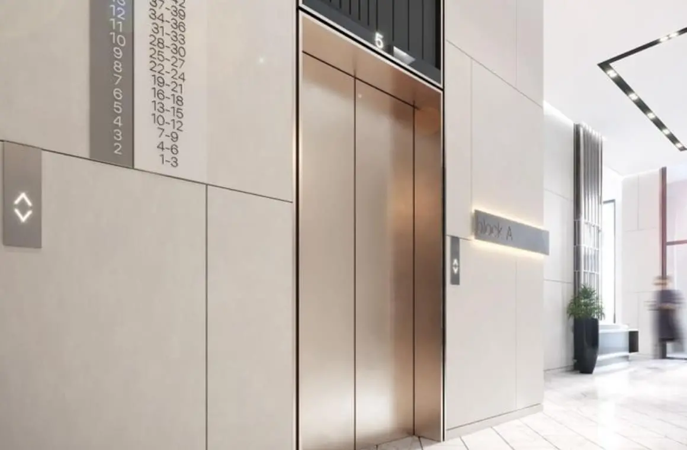
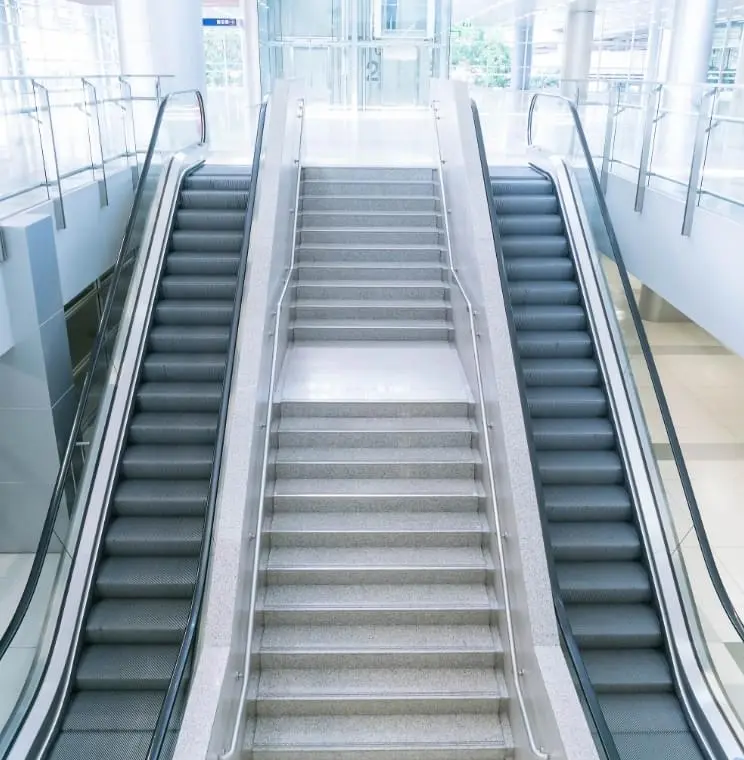

1 000 000 циклов открытия
и закрытия дверей
Каталог лифтов Sanyo

Пассажирские лифты

Панорамные лифты

Больничные лифты

Грузопассажирские лифты

Скоро в продаже
Эскалаторы и траволаторы

Энергоэффективность
и экологичность
и экологичность

Инновационная система
самодиагностики
самодиагностики

Грузоподъемность лифтов
от 450 до 1600 кг
от 450 до 1600 кг
1. Безопасность и долговечность
Привод для дверей кабины испытывается 1 000 000 циклов открытия-закрытия. Это гарантирует его долгую и безопасную работу. А световой барьер дополнительно защищает пассажиров при входе в лифт и выходе из него.
Система управления с использованием CAN-шины и инновационная система самодиагностики Sanyo Elevator обеспечивают мягкую и безотказную работу лифта. Оценивают уровень загрузки кабины, исключают ее движение с открытыми дверями и т.д.
В экстренном случае система автоматически вызовет обслуживающий персонал и включит воспроизведение успокаивающего сообщения для пассажиров (через динамик в кабине).
2. Энергоэффективность и экологичность
В лифтах Sanyo Elevator установлены безредукторные лебедки с синхронными двигателями на постоянных магнитах и частотные преобразователи. Это минимизирует шум и вибрации в кабине.
Безредукторные лебедки просты в монтаже, не требуют смазки и дорогостоящего обслуживания. Они не только экономят электроэнергию, но и генерируют ее в некоторых режимах работы. Это снижает эксплуатационные затраты.
Светодиодное освещение в кабинах дополнительно сокращает энергопотребление. Благодаря ему также удается избежать загрязнения окружающей среды, к которому неизбежно приводит утилизация газонаполненных ламп.
3. Инновационность
Интеллектуальная система, установленная в лифтах Sanyo Elevator, рационально управляет освещением и вентиляцией. Если лифт не используется более 5 минут, в кабине отключается вентилятор и приглушается свет.
Система позволяет управлять всеми лифтами в одном холле. Для пассажиров это значительно сокращает время ожидания. Опционально можно установить систему ограничения доступа, кнопки бесконтактного вызова или функцию голосового вызова лифта.
4. Универсальность
Пассажирские лифты выпускаются для шахт различных конфигураций.
А их грузоподъемность варьируется от 450 кг до 1600 кг. Это позволяет с легкостью перемещать большие группы людей, крупногабаритную мебель или оборудование.
Архитекторы высоко оценивают продукцию Sanyo Elevator за сосредоточение всех узлов в лифтовой шахте. Существует и ряд опциональных решений, позволяющих оптимизировать работу всего объекта. Например, лифты для медицинских центров и лабораторий можно оснастить системой стерилизации воздуха.